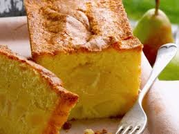

Cake aux poires
Ingrédients
8×
- 3 oeufs
- 150 g de sucre en poudre
- 160 g de farine
- 0.33 sachet de levure
- 150 g de beurre demi-sel
- 50 g de poudre d'amande
- 3 poires

Préparation
Étape 1
Mélanger 3 oeufs avec 150 g de sucre en poudre, puis 160 g de farine, 0.33 sachet de levure et 150 g de beurre demi-sel fondu.
Étape 2
Ajouter 50 g de poudre d'amande et 3 poires coupées en dés.
Étape 3
Cuire 45min à 180ºC.
Résumé
3 oeufs
150 g de sucre en poudre
160 g de farine
0.33 sachet de levure
150 g de beurre demi-sel
Mélanger
50 g de poudre d'amande
3 poires
Cuire 180ºC